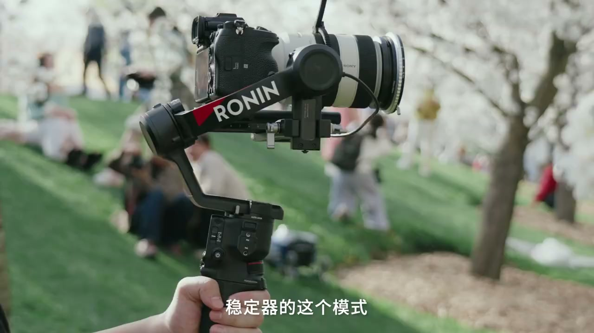
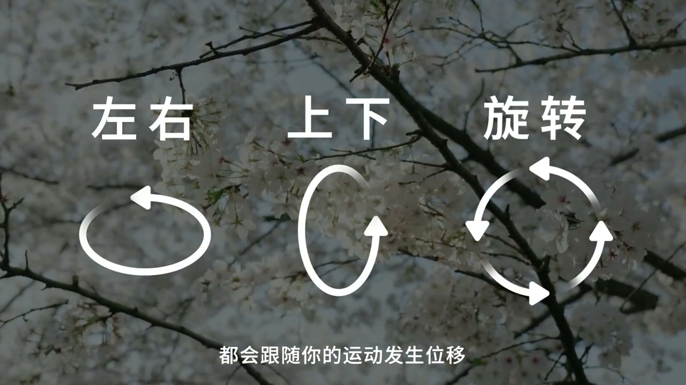

内容要点
这段视频围绕「新手进阶指南！手把手教你用稳定器📹」展开，按时间介绍其中的关键环节。稳定器的这个模式绝对是你最少用到的。
开场引入
稳定器的这个模式绝对是你最少用到的。哈啰 大家好 又是你们的瑞角。全域跟水一直是稳定器新手最头疼的模式。全域跟水模式下。稳定器的三轴都会跟随你的运动 发生位移。稳定器可以更大幅度多角度的运动。全域模式下还可以手同切换成360度旋转自定义的模式。很多大家常见的旋转视角

设置与操作流程
就是用这个模式拍摄出来的。我个人是比较喜欢用全域跟水模式拍摄创作类的慢门镜头。配合云台零引度的设置。画面看起来会比较有张力和冲击力。大家RS4加长了抚养轴的轴弊。相机装上拍摄慢门镜头用到的ND滤镜。也不会再像以前一样。出现碰到横滚轴的情况

总结
就是用这个模式拍摄出来的。